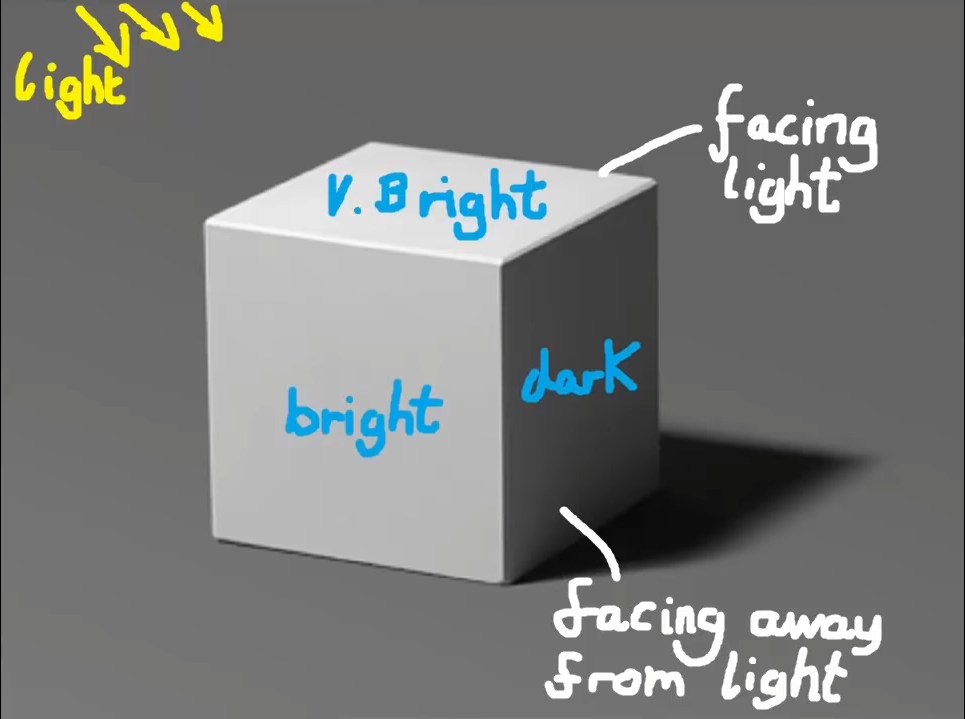
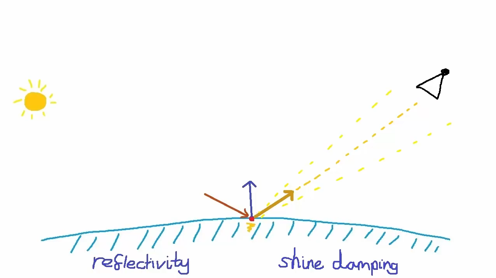

About this project
I decided to do this project when I made my first graphics engine in C. Without light the rendering is not usable.
It was the first time that I really dabbled in 3D shaders in GLSL. I also had to take a long time to understand how the light came into contact with the normals of my objects to reach the camera etc.
I have implemented two types of lights. The first an ambient light, it only takes into account the normals of my objects to know if the faces are in the direction of lights or not. If so the faces are illuminated, otherwise they are darkened. The second a specular light, which allows the objects to shine. This depends on the angle between the direction of the light and the camera. If the angle of the light on the object falls within the vision of the camera then the point shines.


I really like the end result and I'm proud of it.
Demo
Features
- Further use of shaders within my engine.
- Many vector calculations. Like the dot product for comparing angles, or recovering the refraction of light.
- Reusable GLSL shaders, with ambient and specular light. Since then I import this shader in all my projects including GLSL shaders.
Find this project


{kind=link}
{kind=link}
{kind=link}
{kind=link}
{kind=link}